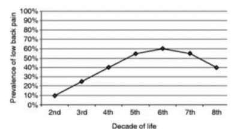
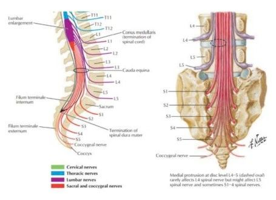
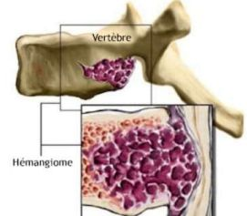

Lombalgies — généralités
Statistiques, temps, prévalence, origine de la douleur
Statistiques
Fréquence
Fréquente ++++ · l'une des raisons #1 de consultation médicale.
Canada
Entre 70 et 80 % des Canadien(ne)s souffriront de lombalgie au cours de leur vie (Statistique Canada).
Coût
Une des conditions musculosquelettiques les plus coûteuses.
Impacts
Physique · psychologique · économique · social.
Variable temps & prévalence
| Type | Durée |
|---|---|
| Lombalgie aiguë | < 6 semaines |
| Lombalgie subaiguë | 6-12 semaines |
| Lombalgie chronique | > 12 semaines |
| Lombalgie récurrente | Par épisode |
10 % des lombalgies évoluent jusqu'à la chronicité.
Prévalence
« Rapport du nombre de cas d'un trouble morbide à l'effectif total d'une population, sans distinction entre les cas nouveaux et anciens, à un moment ou pendant une période donnés. »
Varie en fonction de
Femme > homme · augmente avec l'âge · travail manuel et soulèvement de charge · augmente avec la diminution du statut socio-économique.

Origine de la douleur — multifactorielle
Somatique
Libération de substances algogènes par les structures lésées · réaction inflammatoire locale · réactions réflexes du voisinage (muscles).
Psychologique
Surtout en contexte chronique : personnalité · mauvaise prise en charge · contexte de travail · bénéfices secondaires (avantages inconscients).
Source : « Sémiologie II — Lombalgies », Maude Riendeau — 3e année, IEOQ 2026-2027.
Lombalgie commune
Entorse, arthrose, aiguë, récidivante, chronique
Lombalgie commune
Fréquence
Représente 95 % des lombalgies.
Origine
Mécanique.
Comprend
Discopathies dégénératives · hernies discales · entorses lombaires · arthrose.
Structures en cause
Muscles · ligaments · dure-mère · PAP (processus articulaires postérieurs) · racine nerveuse · anneau fibreux · vertèbre · FTL (fascia thoraco-lombaire).
Entorse lombaire & arthrose lombaire
Entorse lombaire
« Atteinte d'un ou plusieurs ligaments du bas du dos pouvant avoir différents degrés de gravité : étirements, déchirure partielle ou complète. »
Clinique
DLR localisée en Lx · examen neuro négatif.
Mécanismes de lésion
Faux mouvement · chute · soulèvement de charge non ergonomique · accident sportif.
Arthrose lombaire
Voir le chapitre sur l'arthrose. Sous forme de crise inflammatoire et/ou de spasme musculaire.
Lombalgie aiguë / subaiguë
Mécanisme
Épisode isolé de DLR intense +++ avec ou sans trauma · apparition brutale, souvent d'intensité élevée, nuisant à la fonction · amélioration rapide (jours / semaines) · combinaison typique : flexion du tronc + rotation du tronc + soulever une charge.
Symptômes (subjectif)
Situé au Lx bas · DLR en barre ou unilatérale · irradiation possible vers 1 ou 2 fessiers · DLR nocturne possible les premières nuits · si hernie discale : possible radiculalgie / sciatalgie / cruralgie ou compression médullaire.
Posture (objectif)
Perte de la lordose lombaire · position antalgique en flexion (libération des facettes) · mise en charge (MEC) équilibrée ou non · tension musculaire unilatérale ou bilatérale.
Mobilité
Évidemment réduite +++, voire impossible à évaluer (actif vs passif).
Alors que faisons-nous ? Ne pas forcer le mouvement · respect de la DLR.
Traitements (aiguë / subaiguë)
Pharmacologique
AINS / relaxant musculaire / anti-douleur · conseiller de consulter le pharmacien si la médication domestique n'aide pas.
Mouvement
Repos MAIS éviter les positions statiques · marche selon tolérance · étirements doux.
Autres
Chaleur · thérapie manuelle (ostéo / physio) · ergonomie du sommeil : décubitus dorsal → coussin sous les genoux ; décubitus latéral → coussin entre les genoux.
Lombalgie commune récidivante
Portrait
Même portrait clinique qu'en aigu, mais par épisodes (avec ou sans trauma à chaque fois) · récupération variable entre les épisodes (quelques jours à quelques mois).
Si plusieurs épisodes par année
Investigation + prise en charge médicale pertinentes.
Prévention
Physiothérapie et kinésiologie · hygiène posturale et de travail · activité physique · habitudes de vie.
Lombalgie commune chronique
Portrait
DLR depuis + de 6 mois malgré la prise en charge thérapeutique · traitement semblable aux autres lombalgies communes.
À envisager
Infiltrations · suivi psychologique · neuromodulation (ex. TENS) · référence en clinique de la douleur (prise en charge multidisciplinaire).
Chirurgie
Surtout dans les atteintes discales : décompression lombaire · fusion lombaire · futur : hydrogel (hydratation / restauration du volume / flexibilité).
Source : « Sémiologie II — Lombalgies », Maude Riendeau — 3e année, IEOQ 2026-2027.
Lombalgies symptomatiques
Queue de cheval, infectieuse, maligne, rhumatismale, foraminale
🚩 Red flags — lombalgies symptomatiques : syndrome de la queue de cheval · atteintes infectieuses · atteinte tumorale · atteinte inflammatoire / arthritique · myélopathie.
Syndrome de la queue de cheval
Définition
Queue de cheval : L1-L5 (racines de L2 à L5 + racines sacrées).
S&S
DLR Lx et sciatalgie bilatérale · incontinence urinaire et/ou fécale · hyposensibilité ou anesthésie de la région fessière et génitale · faiblesse des membres inférieurs, souvent bilatérale · impuissance sexuelle · diminution des ROT.
Causes
Hernie discale · tumeur · abcès…

🚩 RED FLAG — Syndrome de la queue de cheval = urgence médicale !!
Spondylodiscite lombaire
Définition
« Inflammation ou infection d'une ou des vertèbres et des disques intervertébraux voisins. » Voir spondylodiscite dorsale.
Clinique
DLR Lx locale · S&S neurologiques Lx possibles · touche les Lx dans 58 % des cas.
Lombalgie maligne
Diagnostic
Voir tumeur maligne dorsale. Radiographie : lésions lytiques · vertèbre borgne · lésions condensantes (denses) et mixtes.
Tableau clinique spécifique Lx
DLR récente / localisée qui s'aggrave progressivement et devient insomniante · OU DLR aiguë Lx, traumatique ou non, secondaire à une fracture / tassement vertébral.
Lombalgie d'origine rhumatismale
Maladies
Voir le chapitre sur les arthrites : spondylarthrite · arthrite réactionnelle.
Portrait Lx
DLR présente depuis plusieurs semaines ou mois · plutôt constante · évolution par poussées · rythme inflammatoire +++ · raideur +++ plus intense que la DLR.
Associé à
DLR Tx · oligoarthrite · enthésopathie · atteinte digestive · eczéma · atteinte oculaire…
Lombalgie d'origine foraminale
Causes
Neurinome · méningiome · lipome · hémangiome · hématome épidural spontané (sous anticoagulants ou secondaire à une chute importante).
Clinique
DLR d'apparition lente et progressive, très localisée · accompagnée de raideur Lx +++ · éventuellement S&S neuro · nuit > jour au début · non modifiée par la palpation ou la percussion du rachis.
Diagnostic
Investigation demandée devant l'absence d'évolution favorable (voire aggravation) malgré les soins · scanner · IRM.
Traitements
Analgésique peu efficace · Lyrica · infiltrations de cortisone · chirurgie seulement si la masse augmente.

Source : « Sémiologie II — Lombalgies », Maude Riendeau — 3e année, IEOQ 2026-2027.
Quand référer ? Drapeaux rouges & jaunes
Critères de référence
Quand référer ?
Situations
Condition récidivante ++ ou très très très aiguë · aucun résultat malgré les soins · atteintes neuro importantes (pied tombant) · aggravation des S&S sans raison · « CA ostéoporose » (selon la diapo) → plutôt drapeau jaune.
Drapeaux rouges
- Douleur de type non mécanique : aggravation progressive, présente au repos et en particulier durant la nuit
- Symptôme neurologique étendu : déficit du contrôle des sphincters vésicaux ou anaux, atteinte motrice des jambes, syndrome de la queue de cheval
- Paresthésie au niveau du pubis (ou périnée)
- Traumatisme important (ex. chute de hauteur)
- Perte de poids inexpliquée
- Antécédent de cancer
- Usage de drogue intraveineuse, ou usage prolongé de corticoïdes (ex. thérapie de l'asthme)
- Déformation structurale importante de la colonne
- Douleur thoracique (rachialgies dorsales)
- Âge d'apparition < 20 ans ou > 55 ans
- Fièvre
- Altération de l'état général
Drapeaux jaunes — indicateurs psychosociaux d'un risque accru de passage à la chronicité
- Problèmes émotionnels : dépression, anxiété, stress, humeur dépressive, retrait des activités sociales
- Attitudes et représentations inappropriées par rapport au mal de dos : idée que la douleur représente un danger ou pourrait entraîner un handicap grave · comportement passif, attentes de solutions placées dans les traitements plutôt que dans une implication personnelle active
- Comportements douloureux inappropriés : évitement ou réduction de l'activité, liés à la peur
- Problèmes liés au travail : insatisfaction professionnelle, environnement jugé hostile, problèmes liés à l'indemnisation (rente, pension d'invalidité)
Bibliographie du cours : Chaire de recherche internationale en santé neuromusculosquelettique (UQTR) · Centre de gestion de la douleur (CHUM) · Larousse · Magee · Manuel Merck · Netter · Pathology and Intervention in Musculoskeletal Rehabilitation, Magee · pt Health · Statistique Canada.
Source : « Sémiologie II — Lombalgies », Maude Riendeau — 3e année, IEOQ 2026-2027.